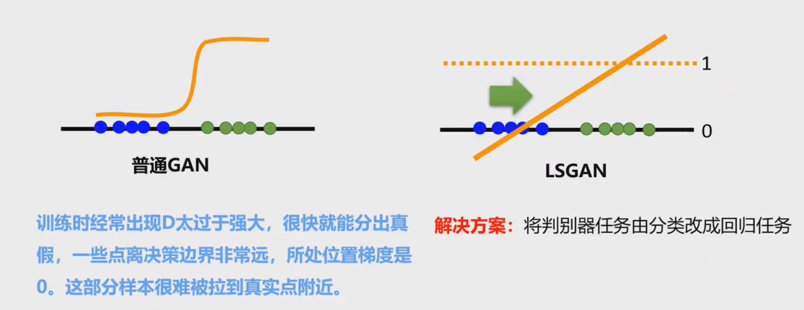
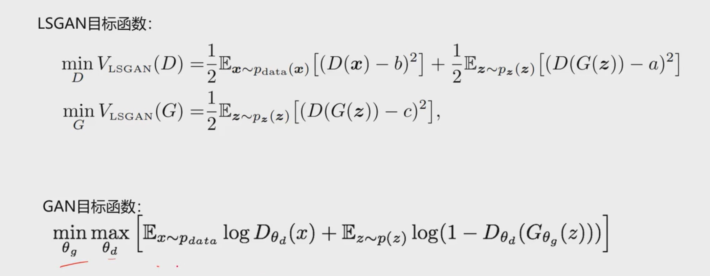
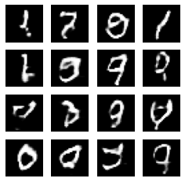

网络结构
在DCGAN(本文)或者普通GAN的基础上，将交叉熵损失改为均方误差损失，就得到了LSGAN
LSGAN是对之前两种GAN的优化，因为当生成器生成的数据分布$P_G$与数据的真实分布$P_{data}$不重叠时，JS散度永远都是log2，从而导致生成器难以更新，见下图


导入相关函数
1 | import tensorflow as tf |
准备数据
1 | (train_images,_),(_,_)=tf.keras.datasets.mnist.load_data() |
1 | train_images.shape |
(60000, 28, 28)1 | train_images.dtype |
dtype('uint8')1 | train_images=train_images.reshape(train_images.shape[0],28,28,1).astype('float32') |
1 | train_images.shape |
(60000, 28, 28, 1)1 | train_images.dtype |
dtype('float32')1 | train_images=(train_images-127.5)/127.1#归一化 |
1 | BATCH_SIZE=256 |
1 | datasets=tf.data.Dataset.from_tensor_slices(train_images) |
1 | datasets |
<TensorSliceDataset shapes: (28, 28, 1), types: tf.float32>1 | datasets=datasets.shuffle(BUFFER_SIZE).batch(BATCH_SIZE) |
1 | datasets |
<BatchDataset shapes: (None, 28, 28, 1), types: tf.float32>搭建生成器网络和判别器网络
1 | def generator_model(): |
1 | def discriminator_model(): |
定义损失函数
1 | #real_out和fake_out都是回归预测值 |
1 | def generator_loss(fake_out): |
定义优化器
1 | generator_opt=tf.keras.optimizers.Adam(1e-4) |
设置超参数，实例化生成器和判别器
1 | EPOCHS=100 |
定义每个batch训练的过程
1 | def train_step(images_one_batch): |
定义生成图片展示的函数
1 | #将test_noise送入gen_model，以产生假图片 |
定义训练函数
1 | def train(dataset,epochs): |
开始训练
1 | train(datasets,EPOCHS) |
漫长的等待过后，最终的生成图片如下：

I'm so cute. Please give me money.


- 本文链接：http://yoursite.com/2020/10/07/LSGAN/
- 版权声明：本博客所有文章除特别声明外，均默认采用 许可协议。